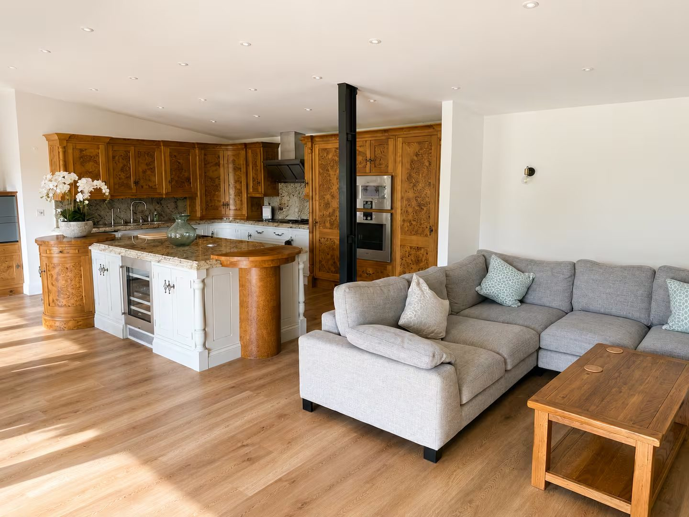
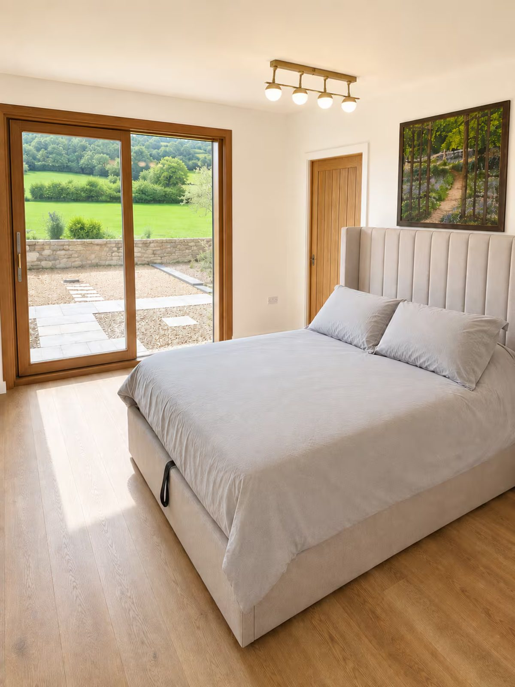
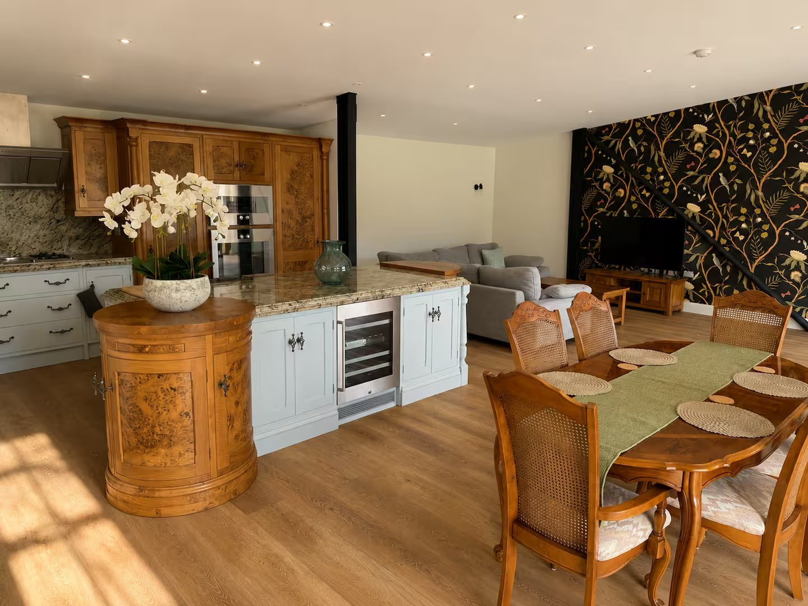
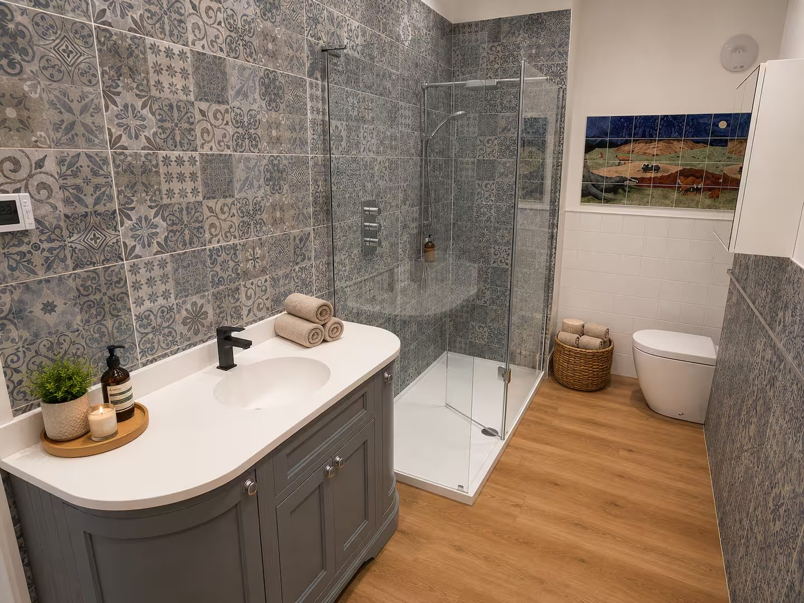
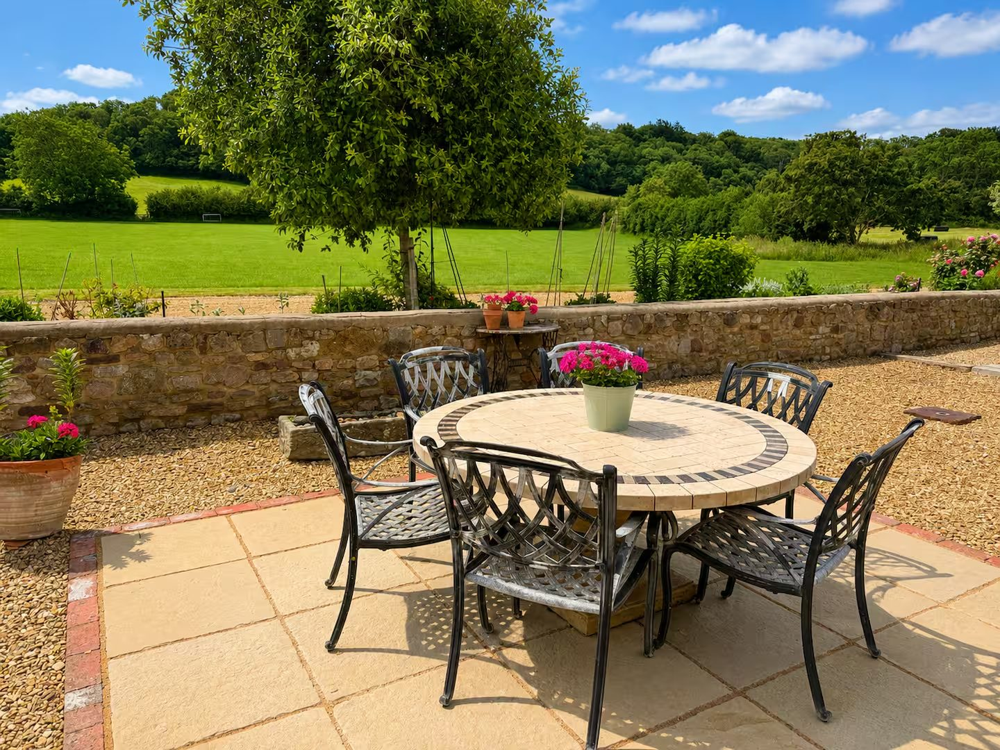
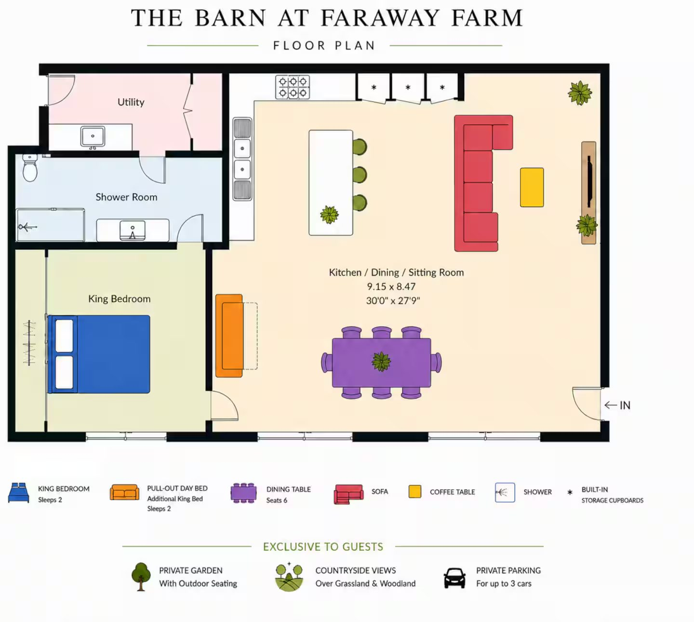

The accommodation
A self-contained luxury conversion, made for slow countryside mornings.
The space
Guests have exclusive use of the whole self-contained annexe — a private entrance, king bedroom, bathroom, full kitchen, living area, garden and parking for three.
At its heart is an open-plan kitchen, dining and sitting room over thirty feet long, with comfortable seating and large doors that bring the outdoors in. It's designed to feel calm, light and easy to live in.

Sleeping
The king-size bedroom opens directly onto the garden, with a calm, neutral palette and a comfortable upholstered bed. A pull-out king-size day bed in the living area sleeps two more, so The Barn comfortably accommodates up to four.

Kitchen & dining
Properly equipped for a real stay: solid timber cabinetry, granite worktops, a wine fridge and everything you need, from a quick breakfast to a celebration dinner. Then gather around a dining table that seats six.

Bathroom
A large walk-in rainfall shower, characterful patterned tiles and a generous vanity unit — finished with the same care as the rest of the barn, and stocked with everything you need.

Outside
Beyond your own patio and garden lie three acres of uninterrupted grounds, looking straight out over open countryside. Coffee in the morning sun, a glass of wine as it sets, and space — plenty of space — to simply be.
Gallery
Layout

Stay with us
We host Faraway Farm through Airbnb, so every stay is covered by Airbnb's secure payments and AirCover host & guest protection.
{kind=link}
{kind=link}
{kind=link}
{kind=link}
{kind=link}
{kind=link}
{kind=link}